Youth-Friendly Health Services
Scheduled youth service days, community outreach clinics, individual health consultations, education sessions and referral.
Hope 4 Teen Parents Uganda is implementing a structured, community-based health programme combining clinical care, outreach, education, psychosocial support, referral and parenting skills — designed specifically for adolescents, teenage mothers, teenage fathers and their children in Tororo District.
A community-based model that creates multiple entry points into care for young parents.
We bring health information and selected preventive services directly to young people — rather than waiting for them to come to a facility.
We provide a welcoming, non-judgmental point of care where adolescents and teenage parents can ask questions and access services confidentially.
We identify health problems early and link clients to appropriate health facilities and specialist services before conditions worsen.
We track referrals, follow up with clients and maintain a referral network so no young parent falls through the gaps between services.
Our 36-month programme covers ten integrated components, all delivered in community settings.
Scheduled youth service days, community outreach clinics, individual health consultations, education sessions and referral.
Age-appropriate SRH education, contraceptive counselling, STI screening, pregnancy counselling, menstrual health and healthy relationship education.
HIV prevention information, risk-reduction counselling, testing through approved pathways, linkage to treatment and stigma-reduction education.
Antenatal linkage, skilled delivery support, postnatal care, immunisation, child growth monitoring, danger-sign recognition and referral.
Basic psychosocial support, stress-management education, parenting and relationship support, group sessions and referral of complex cases.
Nutrition education for adolescents and young parents, infant and young-child feeding guidance, hygiene promotion and safe-water education.
Factual education on alcohol, tobacco and drugs; life-skills strengthening; identification of young people needing additional support; and referral.
Practical sessions on newborn care, communication, budgeting, positive parenting, responsible fatherhood, conflict management and future planning.
Separate and mixed group sessions for teenage mothers and fathers covering practical skills, mutual support, mental wellbeing and goal setting.
Trained youth peer educators share approved health information, mobilise peers, counter misinformation and connect young people to professional services.
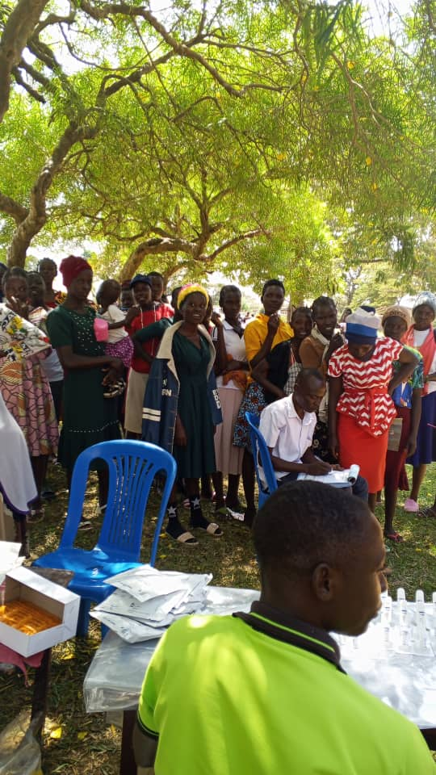
Community outreach sessions bring qualified health workers directly to young parents — providing testing, counselling and health education in a safe, accessible setting outside of a formal health facility.
Where services fall outside H4TPU's scope, clients are referred to appropriate public or private health facilities and followed up to ensure continuity of care.
❤️ Support This WorkThe programme is structured across four phases over three years.
Months 1–3
Community mapping, baseline assessment, stakeholder consultations, referral directory, staff training, tool development and programme launch.
Months 4–12
Regular youth service days, monthly outreach, teenage parent support groups, peer educator engagement, health education campaigns and referral follow-up.
Months 13–30
Expand outreach coverage, strengthen partnerships, improve data quality, document lessons, mobilise additional resources.
Months 31–36
Endline assessment, sustainability review, partner mapping, community ownership strengthening, next-phase proposal development.
Real photos from H4TPU community sessions, health outreach and testing activities in Tororo District.
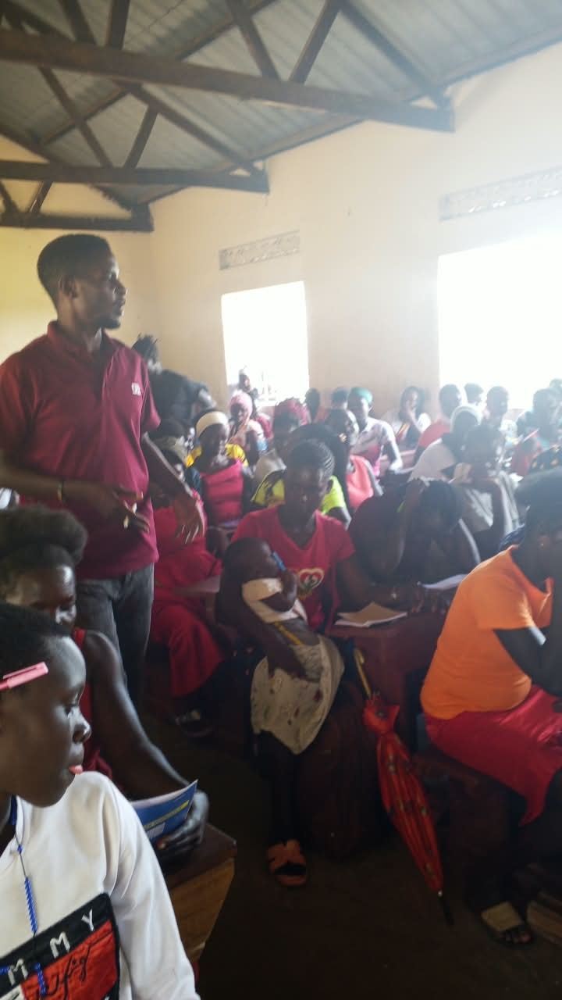
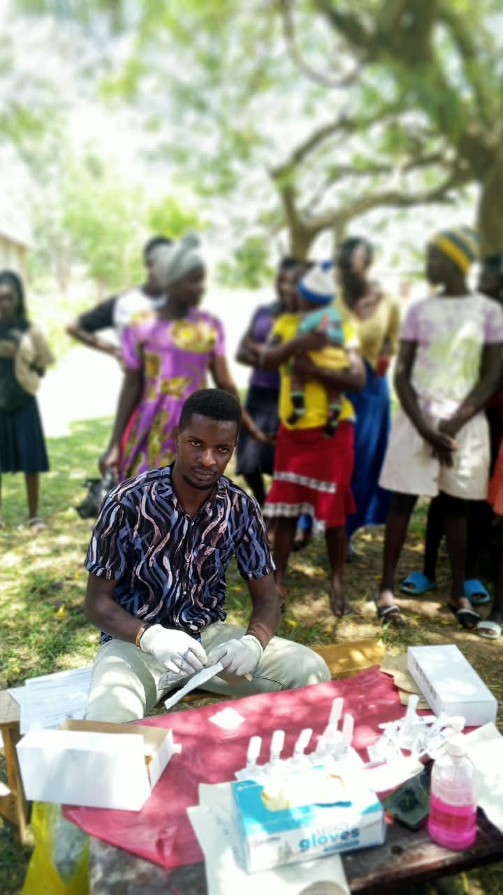
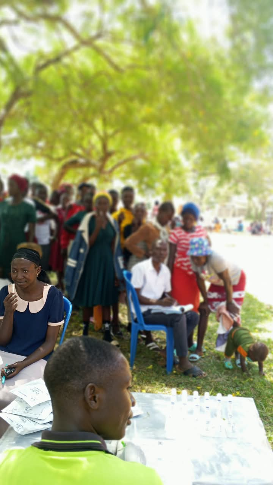
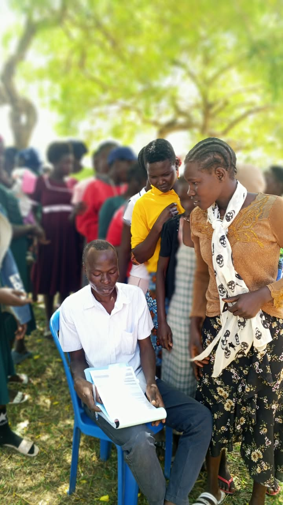
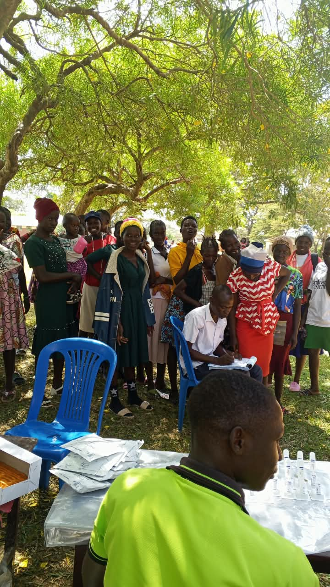
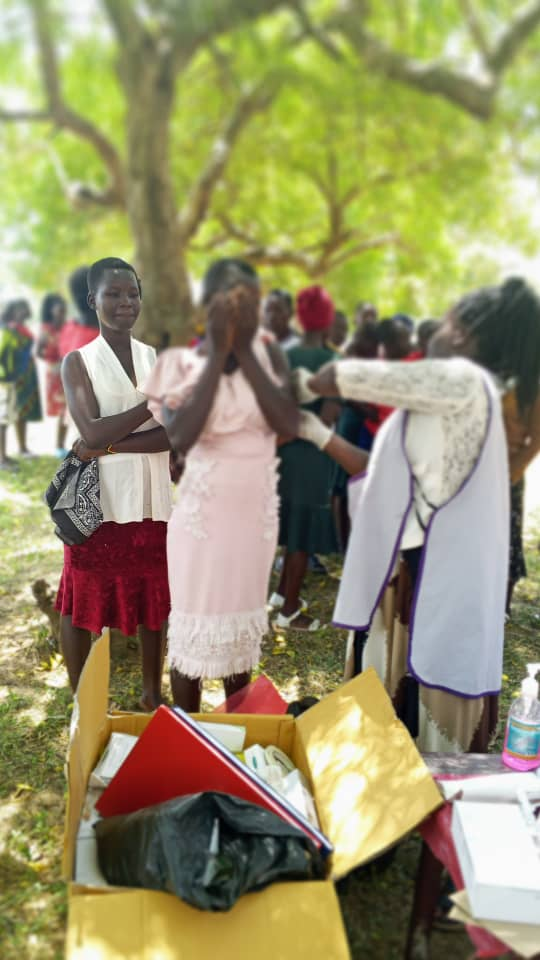
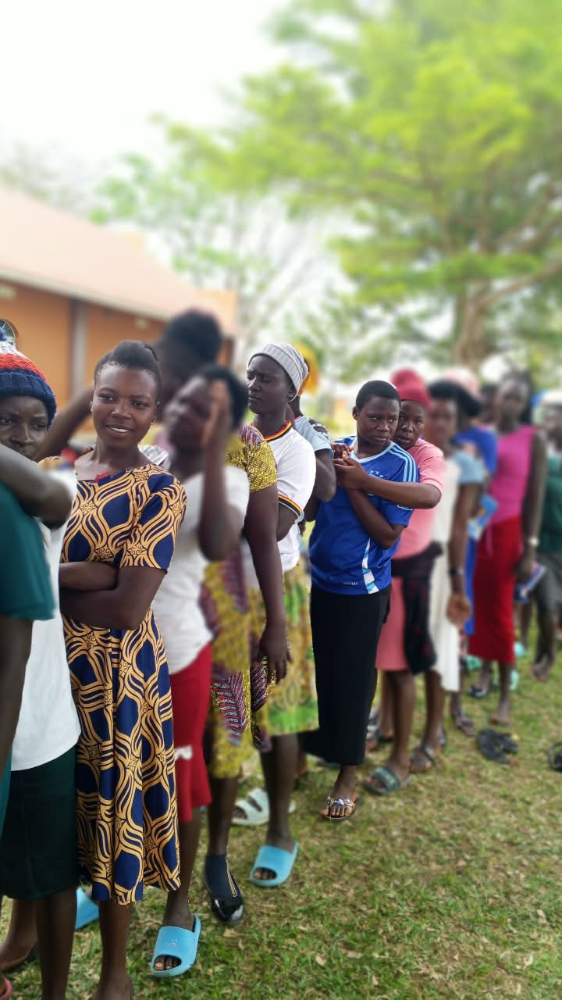
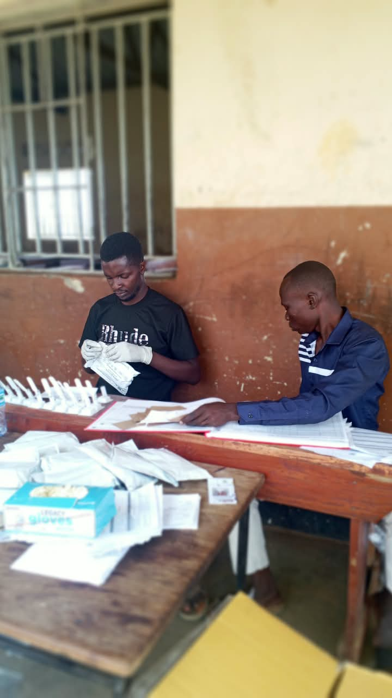
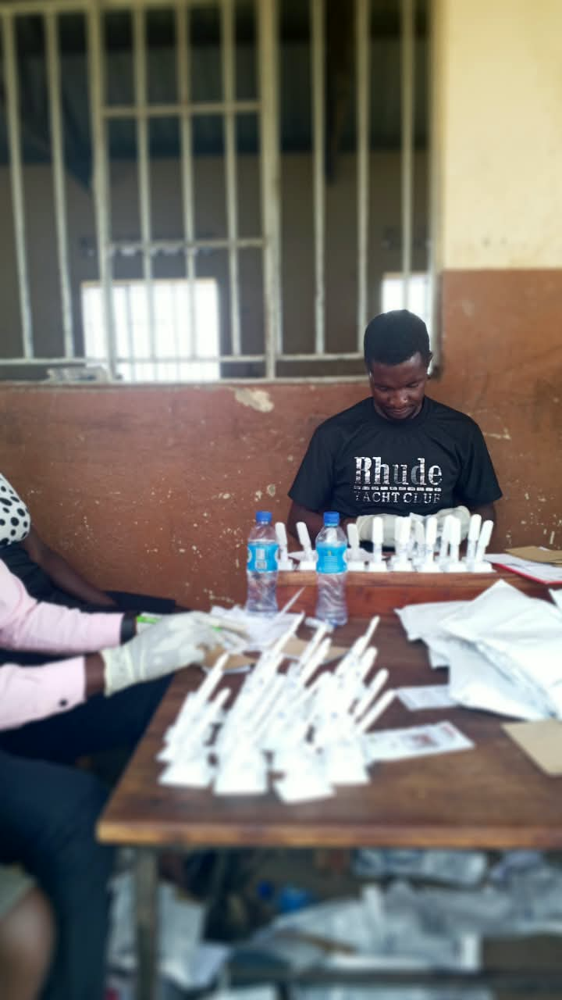
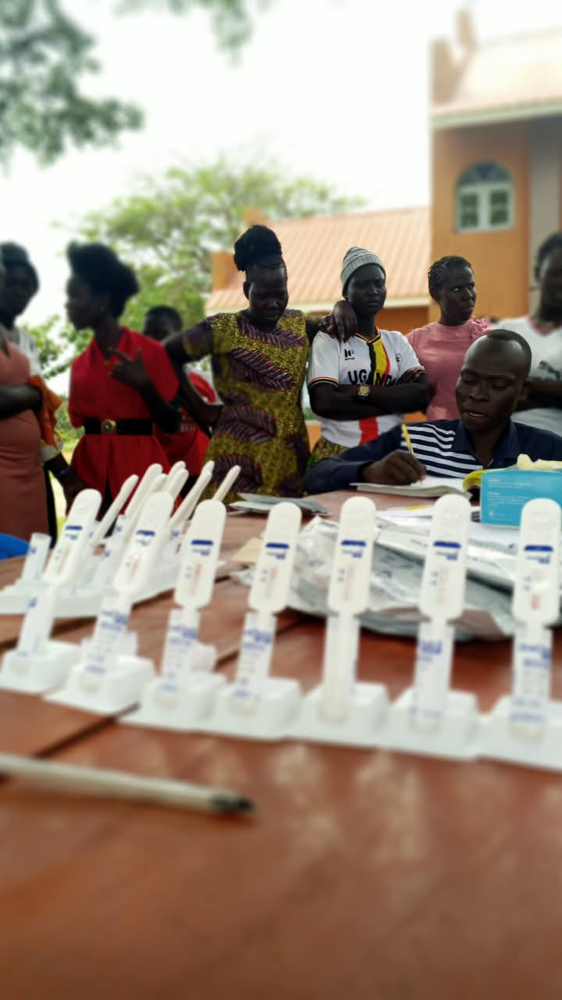
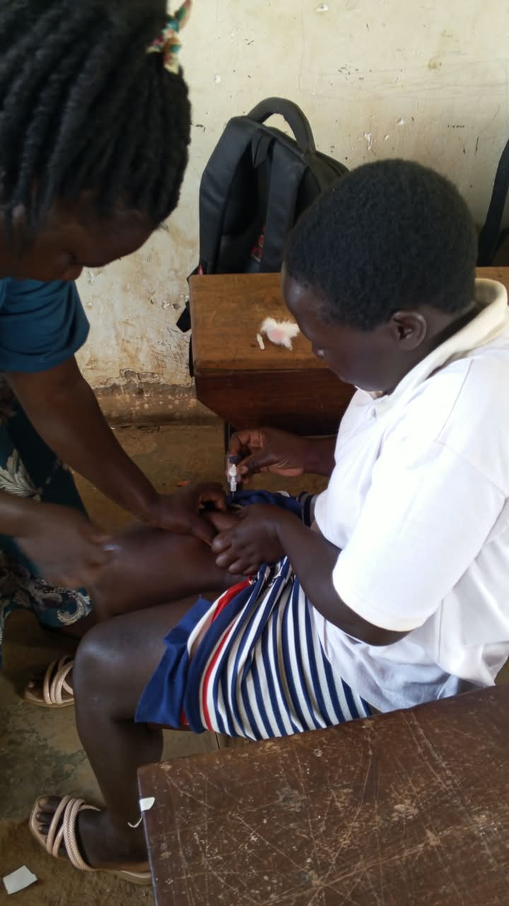
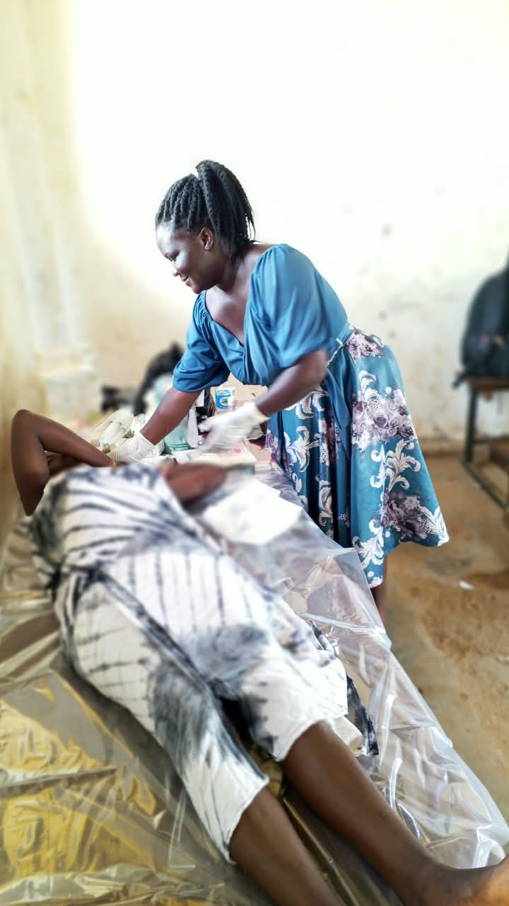
Hope 4 Teen Parents Uganda does not work alone. We build partnerships with the community structures that young people already know and trust.
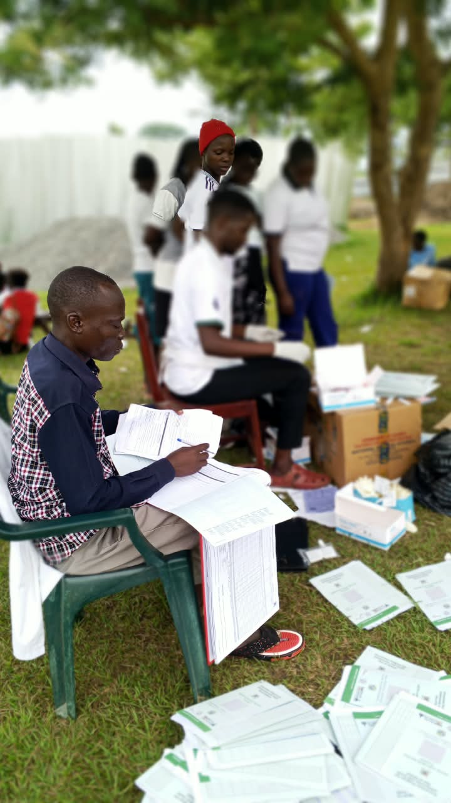
From our project proposal. Targets will be refined after baseline assessment.
📋 All figures are indicative targets from the H4TPU 36-month project proposal (October 2026). Indicative budget: UGX 585,000,000 over 3 years. Actual results will be published as the programme progresses.
Whether you volunteer, donate, or partner with us — every contribution helps us reach more young parents.